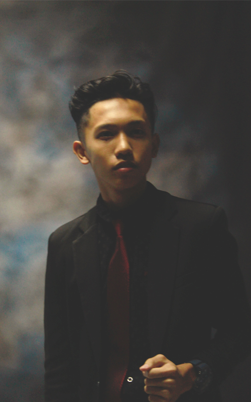
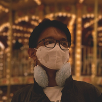
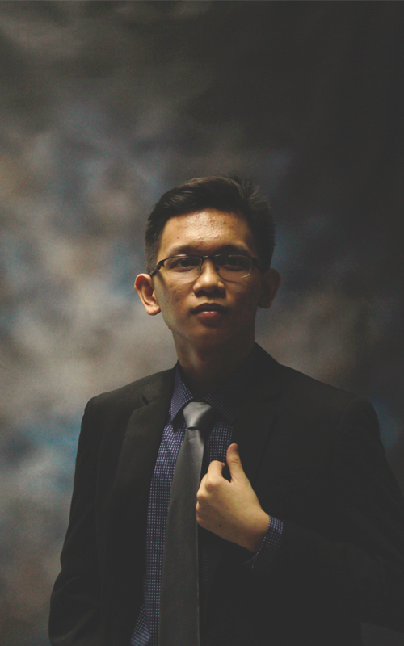
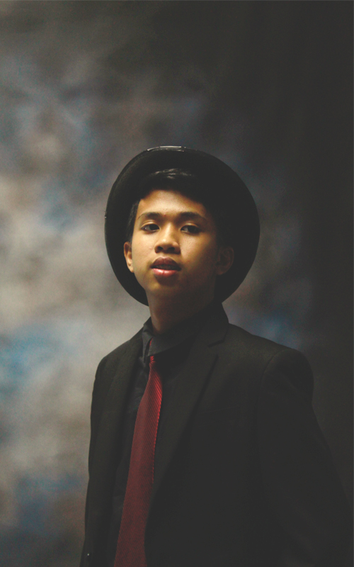
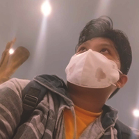
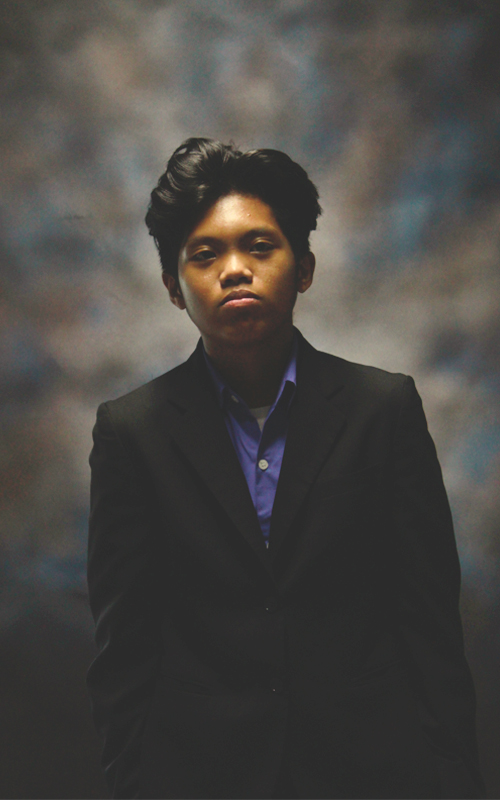

La hermandad fuerte y sólida que dura hasta el final de todo.
|
Amistidad
Friendships start from acquaintances followed by discovery and the formation of bonds. Similarities and differences both create a strong link supported by time and events solidifying and stabling weak points. To put it simply, friendship is planted carefully and let nature do its role. |
Sentimientos
Feelings are real towards friendships. It is nourished through the moments created in time and cherished in memories. Love is present alongside compassion and sympathy fortifying the established relation, which surpasses all defiance and challenges. |
Las Personas
Meet my "Amistosos" and what makes them.
|

|
Clarence Espiritu
A determined, defying person well diversed in the discipline of mathematics and physics aiming to attain his dreams of realizing his future construction works. His unmatched self discipline never disappoints enabling him to continue without any worries despite all sacrifices. "Diamonds are made under pressure" Personally, he is a remarkable, charming, organized, and calm friend whose simple wish is to simply have a relaxing time after all hardwork. I really find his determination fascinating, which I envy to have; since he can study for hours end, depriving himself from worldly pleasures in pursuit of his goals. |
|
Louie Torres
A curious spirit whose passion is to discover the world, especially the technical world. He finds ways to improve his knowledge and satisfy his curiosty, which permits him to advance further in his path. By that, he strives for knowledge and completion of himself. "Find something that you love. Take care of it and it will take care of you"

Personally, he is a great, pleasing, enthusiastic, and resourceful friend making his environment a land of mystery. He is not entirely mysterious but he knows things that you would expect that he does not know. Although, I can say that himself, finding his ways sparks curiosity. |

|
|

|
Ezra Rosas
An aspiring multimedia artist constantly conceiving his canvas to see the product of his suffering and failures. A person whose mind is focused on sharpening and improving his lines, strokes, conceptions, perspectives, and ideas to create an enthralling and perfect vision of his point of view. "Life will keep on leading you to closed doors, so grab a sledgehammer and put a hole on them doors" 
Personally, he is an sincere, persistent, artistic, and social friend who does not let his problems consume him. He is great in singing and making songs and is now realizing those in his arts; freeing his thoughts and clearing his mind to see the peaceful view in life. |
|
Drew Magdua
An unbothered character who lets destiny take him to places he should not belong but deserve to be at. He never rush things nor let worldly things put him in pression prioritizing what should be. A challenger that seems useless on the outside but a champion by mentality. "Is there any value to this thing we call living"

Personally, he is always relaxed, unfazed, chill, and easy-going. A friend that you can trust and will be there when you need him. Also, he is quite amazing despite that he is not academically intelligent making me believe that his success will come from his work. |

|
Ultimas Palabras
My "Amistosos" are great friends that I have been with ever since high school. Until know, we still have means of communication, may it be through message applications, games, or sometimes; face to face. They are really fun to be with especially when we are all together and creating new recollections. Furthermore, memories, bonds, events, occassions, moments, and the likes are all souvenirs that I cherish with them making me look back at my past and relive those happy moments. Lastly, I do wish to futher consolidate our friendship so that it may last forever.